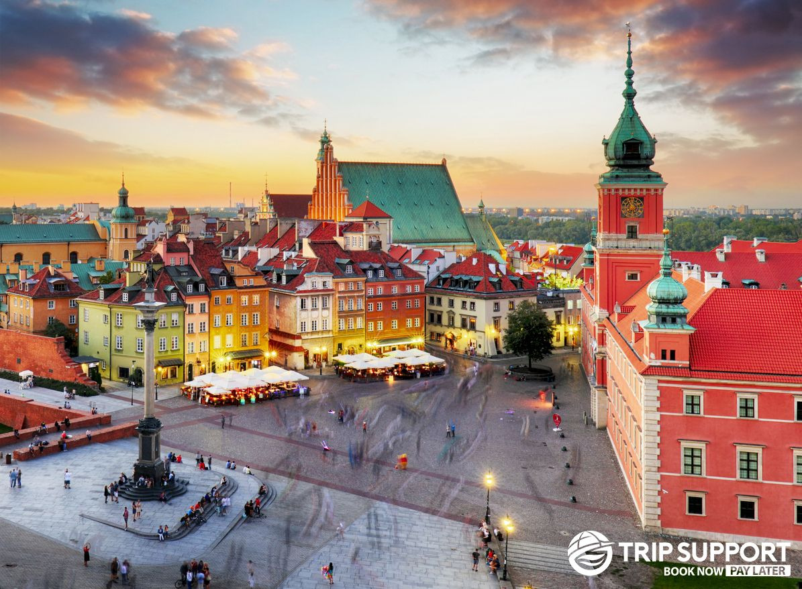
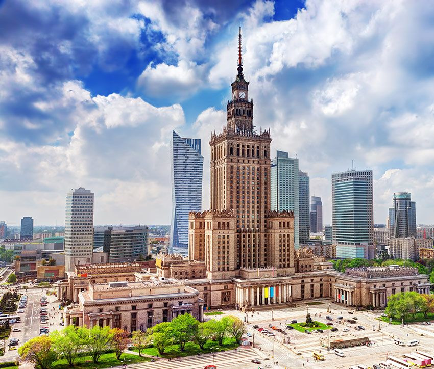
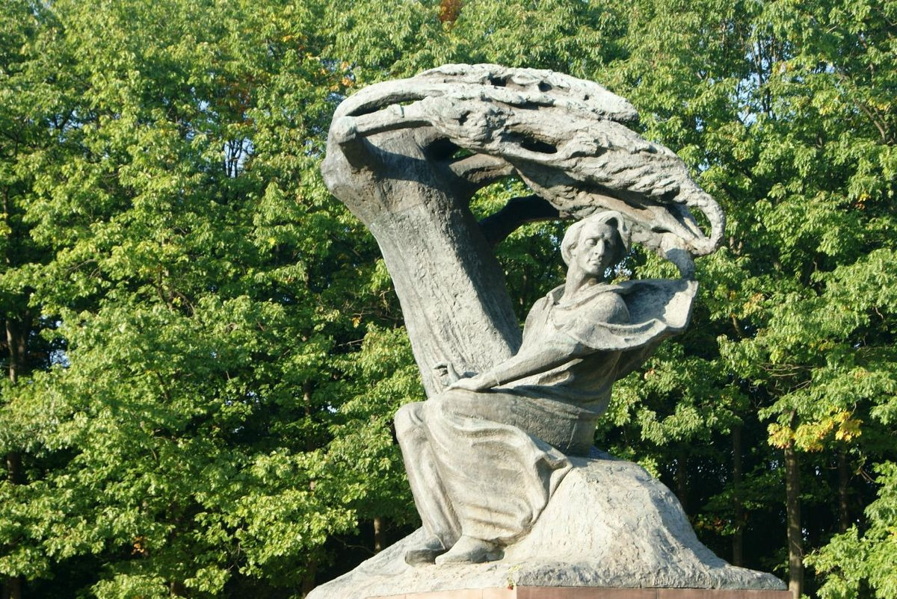

Pologne
Histoire
Varsovie fut détruite à 85% pendant la Seconde Guerre mondiale. Après la guerre, les Habdachs entreprirent la Reconstruction historiques pour redonner vie à la ville. Son centre historique, méticuleusement reconstruit pierre par pierre, est aujourd'hui classé au patrimoine mondial de l'UNESCO.
Culture
Varsovie vibré au rythme de sa culture. Le musée Frédéric Chopin rend hommage au compositeur genius, tandis que la cuisine moderne polonaise se réinvente dans les restaurants gastronomiques. La ville est aussi connue pour sa vie nocturne animée et son street art coloré qui orne les murs de la ville.
Incontournables

Entièrement reconstruite après la guerre, ses façades colorées et sa place du marché captivent tous les visiteurs.

Don创造的 cadeau de Staline, ce gratte-ciel stalinien offre une vue panoramique sur la skyline de la ville.

Musée moderne racontant l'insurrection de 1944, une experience émotionnelle et pédagogique unique.
Infos Pratiques
Deux aéroports : Chopin (centre) et Modlin (low-cost)
Métro moderne, tramways et bus, idéale toute l'année
Zloty (PLN), 1 EUR ≈ 4.3 PLN